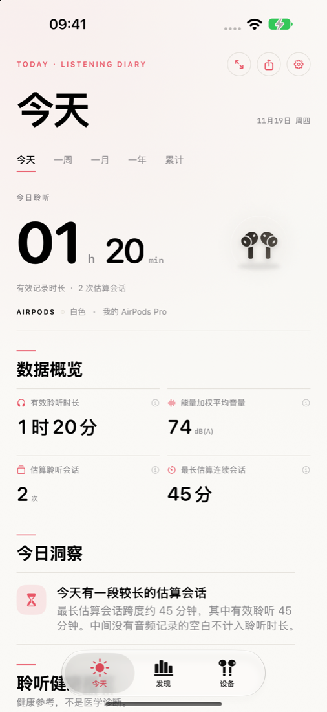
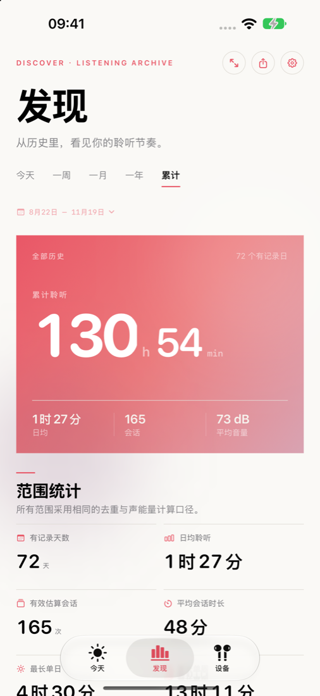
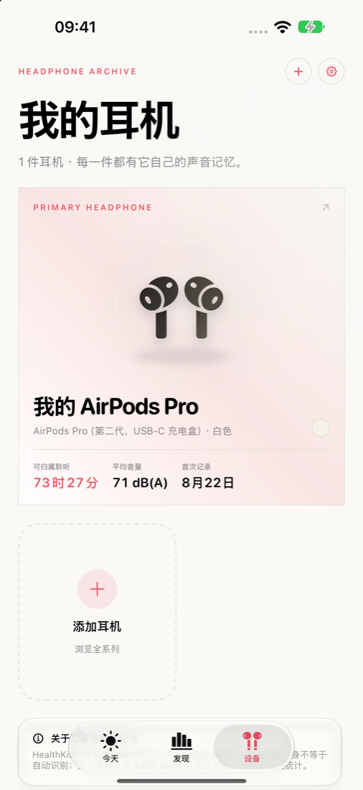

01 / 记录
今天、一周、一月、一年、累计
用大号数字和编辑式排版看聆听时长、能量加权音量、估算会话与最长连续会话。切换周期，数据即时重算。
不止记录你听了多久，更让你了解每一次聆听。听序读取你授权的 Apple 健康耳机音频暴露记录，在本机生成专属于你的聆听档案。

用大号数字和编辑式排版看聆听时长、能量加权音量、估算会话与最长连续会话。切换周期，数据即时重算。
基于 WHO 成人安全聆听参考模型估算声音暴露，并将 Apple 健康记录的高音量事件与本地统计分开呈现。
收藏 AirPods 与 Beats 历代耳机，选择真实官方配色。只有明确关联的来源才计入“按耳机”统计。


隐私优先：健康数据在本机处理，不上传，不需要账户，不用于广告画像。分享只由你主动触发。